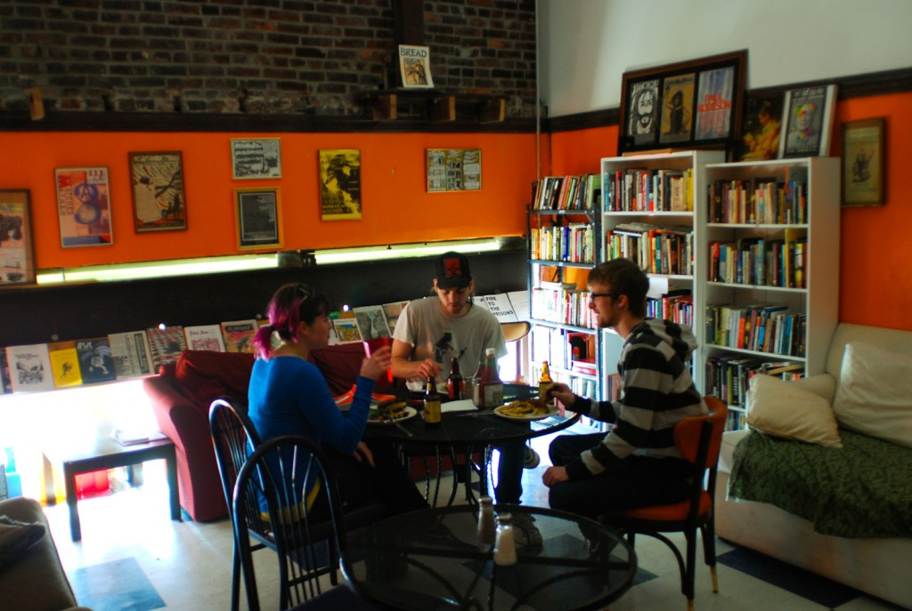

Kara Ayı Fırını
Yaşadığım ekolojik köyün ekmekleri Black Bear (Kara Ayı) adlı çalışanların sahibi olduğu ve işlettiği bir fırından geldiğini söylemiştim, ne zamandır bu fırınla ilgili yazıcam diyordum kısmet bugüneymis. Geçen cuma günü fotoğraf makinemi kapıp bu fırını ziyarete gittim, hem biraz fotoğraf çekeyim hem de bu fırın nasıl çalışır, ne üretir, ne yapar ne eder bir öğreneyim diye. Şimdi bu abiler kendilerini anarşist diye tanımlıyor, ve anarşist diyince biliyorum insanın aklına kaos kargaşa gibi kelimeler geliyor ama ben gayette tıkır tıkır düzenli çalışan bir fırın gördüm. Anarşistlerin düzenle iliskisini Elif’e paslayip, ben bu kendini anarşist olarak tanımlayan fırının düzeninden bahsedicem.
Efenim, fırınımız Güney St.Louis’de, belki de St.Louis’ın en alternatif en renkli caddesi olan Cheeroke caddesinde yer alıyor. Bu Cheeroke caddesi başlı başına bir yazı konusu, onu bir başka bahara bırakıp fırının içine girdiğinizde rengarenk sıcak bir ortam ekmek kokuları ile sizi karşılıyor. Black Bear temel olarak ekmek ve çeşitli kurabiyeler üreten bir fırın olmasının yani sıra, aynı zamanda mini kütüphanesi ve keyifli mekanı ile bir kafe hizmeti de görüyor. Bilgisayarını kapıp kahvenin içerek ders çalışmak, leziz yemekleri ve pizzaları ile karnını doyurmak, ortalıktaki dergiler ve kitapları okuyarak pazar tembelliği yapmak için bire bir.

Tezgahın arka tarafına geçtiğinizde ise hummalı bir çalışmanın içinde buluyorsunuz kendinizi. Bir yanda değişik karışımlarda hamurlar yoğrulurken öte yanda masada hamurlardan gramajına göre parçalar kesilip, Black Bear çalışanları tarafından değişik ekmek ve bagel şekli verilip tepsilere diziliyor, oradan 1887 yılında yapılmış olan devasa bi fırında pişiriliyor. Fırından çıkan sıcak ekmekler soğumaları için bekletildikten sonra dilimlenip poşetlere yerleştiriliyor. Dükkanda satılacaklar raflardaki yerini alırken, lokantalara veya değişik pazarlara sipariş olanlar kasalardaki yerini alıp şehrin dört bir tarafına dağıtılıyor.
Black Bear tarihi Lickhalter fırınından aldıkları tariflerle “Lickhalter” ekmekleri ve diğer bir çok modern karışımlı ekmek üretiyor. Lickhater fırını 1915 yılında açılmış, çavdar ekmekleri meşhurmuş. 1950ler ve 60larde St.Louis’ın en büyük fırınıymış hatta. 1970lerde Lickhalter ailesi fırını devretmiş ardına bir de yangınla fırın tarihin sayfalarına gömülmüş. Ta ki 1998’e Lickhalter’in meşhur ekmek tarifleri, Black Bear adıyla tekrar gün ışığına çıkana dek. 2004 yılında benim ziyaret ettiğim Cherooke caddesindeki, eskiden Vandora tiyatrosu olarak bilinen ve 1998’den beri boş duran mekanı satın alıyorlar. Vandora tiyatrosunu sürdürülebilir tasarım prensipleri ve yeşil bir mimarı ile restore ediyorlar. Kabaca, olabildiğince yerel iş gücü
ve yerel malzemeyle, büyük ölçüde kendin yap usulüyle, enerji kayıplarını en aza indirecek, mevcut malzemeleri tekrar kullanıma kazandıracak, mümkün mertebe ikinci el malzemelerle (bütün fırın malzemeleri ikinci el misal, iç dekorasyonun çoğu da ikinci el) yapmışlar, mevcut alanın maksimum kullanan ve insanların keyifle takılabileceği geniş tavanlı ferah mekanlar yaratmışlar. Tuvaletlerde insanlar şiir yazması için tebeşir tahtaları bile var!
2006 yılında yeni mekanlarına taşındıktan sonra fırın dışı aktivitelere de hız vermişler. Mekanlarını kültürel, politik veya bilimum yaratıcı aktivetelere açmışlar. Müzik, film gösterimi, performanslar beri gelsin. Bir çok farklı politik grup burada sunumlar veya toplantılar gerçekleştirebiliyor. Fırının arkasına yaptıkları bahçede yemeklerinde kullanmak üzere sebze, meyve ve gönülleri zenginlestirmek için çiçek yetiştiriyorlar.

Ekmeklerinden, yemeklerinden pek bahsetmiycem prenses ki canın çekmesin. Fırında fotoğraf çekerken o nefis kokuların arasında neler çektiğimi bir ben bilirim 🙂 Ama şu kadarını söyleyeyim, hayatımda yediğim en leziz ekmekler bu fırından, hastasiyim. Hiç bir katkı maddesi kullanılmadan, tamamen doğal, yerel, organik ürünlerden yaptıkları ekmekler gerçekten müthiş. Öyle ki şu an St.Louis’deki en lüks restoranların büyük çoğunluğu ekmeklerini Black Bear’den alıyor. St.Louis’de burayı bilmeyen yok yani.
Tabi insan her başarılı girişimin arkasında değirmenin suyunun nasıl döndüğünü merak ediyor. Black Bear’de işler çok ilginç bir şekilde dönüyor. Birincisi burada bir hiyararşi yok, kimse kimseye ne yapmasını söylemiyor, bütün işin gidişatını denetleyen birisi de yok. Bütün kararlar konsensusla alınıyor, hafta bir çarşamba günleri toplanıp gündemlerindeki konuları tartışıyorlar. Ama karar alma, katılım esasına dayali. Ne kadar ekmek o kadar köfte yani. Daha çok emek koyanın daha çok söz hakkı var. Herkes saat başına aynı ücreti alıyor. İster 15 yıldır Black Bear’de çalış ve en karmaşık işleri yapıyor ol, ister üç günlük bulaşıkçı ol aynı ücretle çalışıyorsun. Şu anda çalışanlardan 6-7 kişi hayatlarını sadece Black Bear’den kazanıyor. Çok bir şey kazanmıyorlar, ama yaşamlarını devam ettirebiliyorlar. Onun dışında bir grupda yarı zamanlı çalışan var. Hemen hemen herkes her işi yapıyor, ama işleri öğrenmesi biraz zaman aldığından bazı işler belli bir birikim
gerektiyor. Yani uzmanlaşma var, özellikle fırıncı ve her gün eldeki siparişlere göre ne kadar ekmek yapılacağını hesaplama gibi işler daha deneyimli çalışanlar tarafından yapılıyor. Ama altı ay-bir yıl kadar Black Bear’de çalıştığın zaman her işi yapabilir hale geliyorsun. Yani uzman sınıf yok. Bunun en somut örneği, şu an kurucu üyelerden hiçbiri Black Bear’de çalışmıyor artık. Ama onların yerine başka insanlar gelip onların yaptıkları işi yapıyorlar, yani insanlar değişse de aynı sistem devam edebiliyor çünkü bilgi aktarılıyor.
Hiyerarşinin, bir kontrol mekanizmasının olmaması sorun yaratmıyor mu, tabi ki yaratıyor bazen. Tartışma toplantılardan, email listelerinden hiç eksik olmaz diyip gülüyorlar bunu sorduğumda. Tartışmalar, fikir ayrılıkları yaşantılarının doğal bir bileşeni. Tartışmaların verimliliklerini azaltığı da oluyor. Arada kızıp çekip gidenler de oluyor. Oluyor ama, bu da sürecin bir parçası diyorlar. Bazen fikirlerini kabul ettirmeyi, bazen başkalarının fikirlerini kabul etmeyi, bazen de ortada kalan konularda herkesin kafasına göre takılmasını kabul ediyorsun bir süre sonra diyorlar. Sonuçta ekmekler raflardaki yerini aldıkları sürece çözülemeyecek bir sorun yok.
tag replica watches ukmens replica rolex watches uk
Black Bear leziz ekmekleri ile olduğu kadar, ekmek kadar temel bir şeyi insan gibi üretmesiyle de kalbimde taht kurdu. İnsan isteyince ve biraz prensipli olunca prenses, başka bir dünya mümkün be!
NazIm
ps: Black Bear hakkında daha fazla bilgi için websayfalarına bakabilirsiniz. Burada çektiğim diğer fotoğraflar için ise sizi şuraya alalım


{kind=link}
{kind=link}
{kind=link}
{kind=link}
{kind=link}
{kind=link}
{kind=link}
İlk önce şunu söylemem lazım ki fırının ismi hakikaten çok ilginç ve bir o kadar da güzel. Mekanın kendine has ortamı ise harikulade. Fotoğrafların (hepsi için söylüyorum) ortamla bir bütün oluşu nasıl oluyor da bu kadar doğal olabiliyor bazen şaşıyorum. Baktığımda hepsi neredeyse kusursuz. Hepsi çok başarılı, emeğine sağlık. Mekanın ya da oraya ait olan her şeyden, herkesten sanki bir parça almış gibi. Sonra bu parçaları bütünleyip oraya geri koymuş..
Merak ediyorum; acaba ilk defa gittiğin bir mekanda da bu kadar doğal karelerle, mekanla iç içe fotoğraflar elde edebilir misin\miyiz?
Eyvallah, fotograflari begendigine cok sevindim 🙂 Fotografta dogallik uzerine konusmak benim pek haddime olmasa da, cok can alici benim son aylarda uzerine siklikla kafa yordugum bir yerden yakaladigin icin, bu fotograflar ozelinde olmasa da internette arastirdiklarim baska fotografcilardan ogrendigim ve uygulamaya calistigim seylerden biraz bahsetmeden duramayacagim.
Simdi fotografta dogallik cok zor mevzu ve benim anladigim bunu elde etmenin yolu buyuk oranda gorunmez olmak gibi imkansiz bir yoldan geciyor.Boyle bir mekanda elinde bir kamerayla nasil gorunmez olabilirsin? Once kucuk kameralar, bel seviyesinden cekim gibi teknikleri denediysem de pek basarili olmadi sonuclar. Daha sonra farkettim ki: gorunmez olamazsin, ama gorunurlugunu, dikkat cekiciligini azaltabilirsin. Fotografcilar bazen kendilerinin o kadar sa saali ekipmanla kusanmis olarak ne kadar dikkat cekici olduklarini farketmiyor. Bunun uzerine kameranin uzerindeki marka model logolarini, lens kapaginin uzerindeki marka logosunu siyah elektrik bantiyla kapattim. Boyun askisini, duz siyah bir askiyla degistirdim. Fotograf cantami siyah asker cantasi modunda sade basit ve fotograf cantasi gibi gorunmeyen bir cantayala degisitirdim. Zoom lensler yerine, sabit focal uzunluklu prime lensler kullaniyorum, ne kadar kucuk bir lens kullaniyorsan karsindaki insanla arana daha az mesafe giriyor. Gidecegim mekana uygun, low profile giyinip, mekanda gayet humble takiliyorum, dogal olmaya calisiyorum, bol gulumseyip insanlarla rahat bir iletisim kurmaya calisiyorum. Cektigim fotograflari begenmesem de bol bol fotograf cekiyorum ki insanlar kameranin varligina da alissin. Kimileri bunlara batil inanc da diyebilir tabi, ama butun bu faktorler birlesince bence bir derece gorunmez olup, mekanla harmanlana biliyorsun.
Ilk gittigin bir mekanda dogal kareler yakalamak zor tabi. Ayni mekana tekrar tekrar gidip uzun sure calismak her zaman cok daha iyi, cok daha guzel fotograflar yakalayabilirsin oyle. Ama yukardaki taktiklerle bir derecede olsa ilk gittigin mekandaki yabanci olma durumunu minimuma indirip, elinde olan zaman dilimin bir seyler cikartmak da mumkun sanirim.Yukarda ki fotograflar ozelinde konusursak sanirim buyuk olcude o mekanin kendi dogalligi.
Yorumlar fotoğraflar gibi doyurucu olmuş :] genellikle insan fotoğrafları çeken biri olduğum için ortamlara pek kafa yoramıyorum. ama sanırım bunun da vakti geldi geçiyor. şimdi hayalimde bir lens var onu alırsam artık mekanlara gitme vaktidir. İnsanları mekanlarda keşfetme vaktidir..
Tekrar teşekkürler.
genc fotolar saglam olmus. sen kaptin bu isi diycem ama bi tarafım da hala yok yok nikon’un marifeti uzerine biraz da fotoşayn yapmış da diorum. nedir olayımız eskiden poz bilgisi falan da yazılırdı dimi fotograflara.
nikon’un marieti var canim, ama makineden cok bence lenslerinin. Prime lensler rulez! Fotolar lightroom’da islendi ama cok minimal processing var, sadece beyaz ayari(ic mekanda karisik isik kosullarinda beyaz ayarini tutturabilen bir makinenin alnindan opmek lazim zati) ve kontrastla oynandi o kadar. Poz bilgilerine picasa sayfasindan more info diyip bakabilirsin, sakli gizlimiz yok allaha cok sukur 🙂